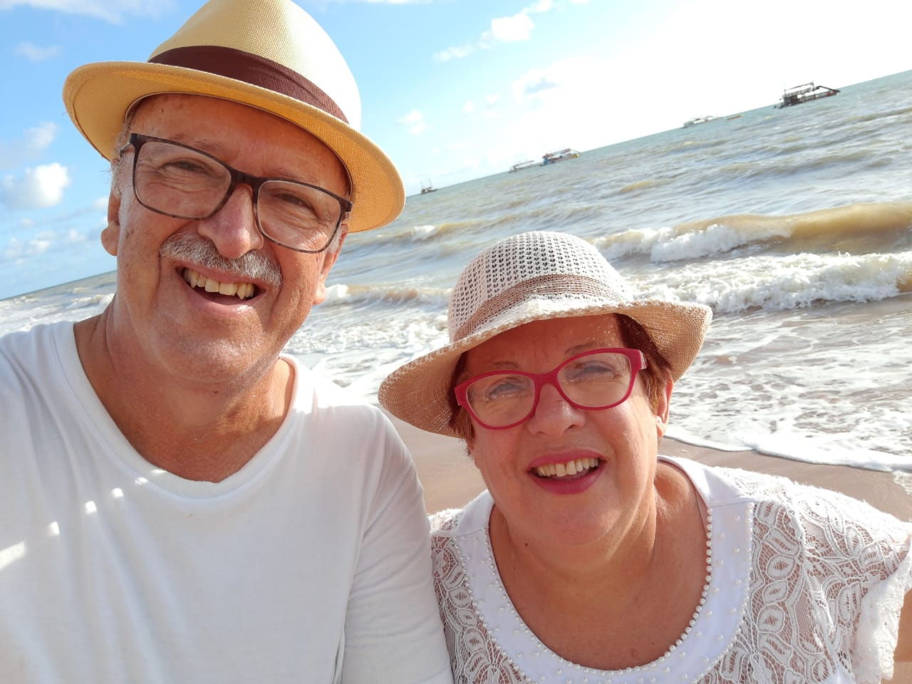

Jairo e Regina Mattos
FundadoresO programa "Preparando o Futuro" era um sonho que se tornou realidade graças ao envolvimento deste casal idealista. Jairo, engenheiro, e Regina, psicóloga, dedicaram vários anos neste belo programa sócio educativo, proporcionando a jovens de baixa renda uma oportunidade de vida melhor através da educação.